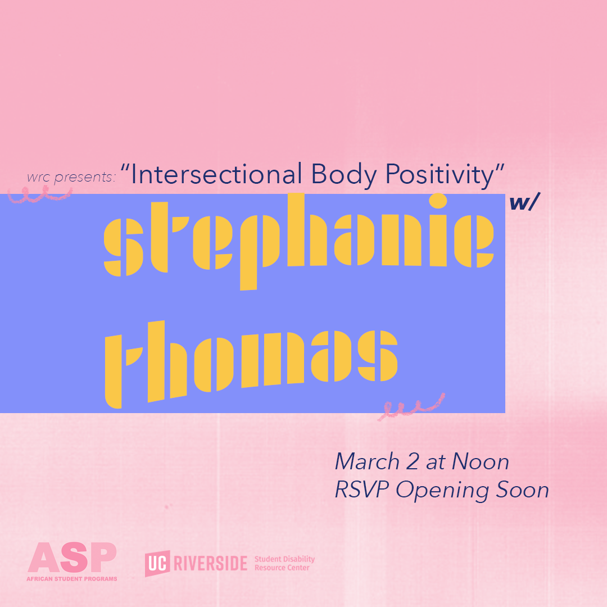
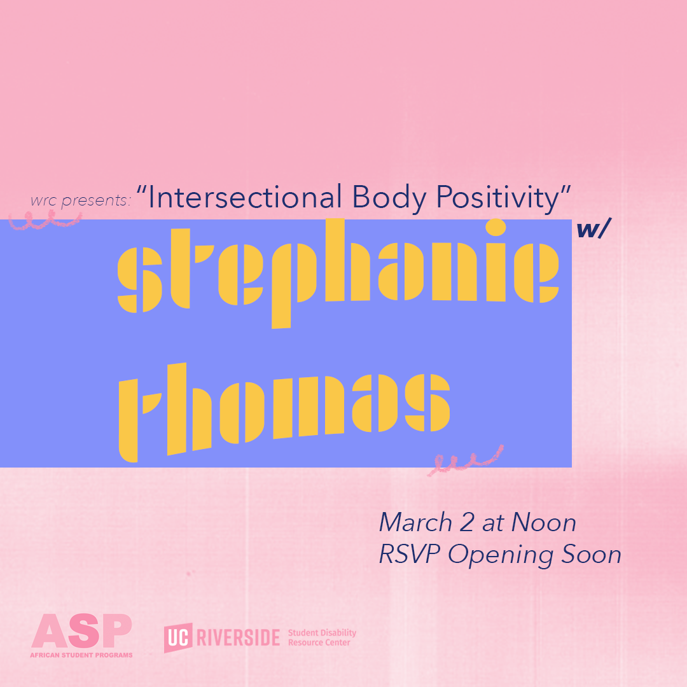
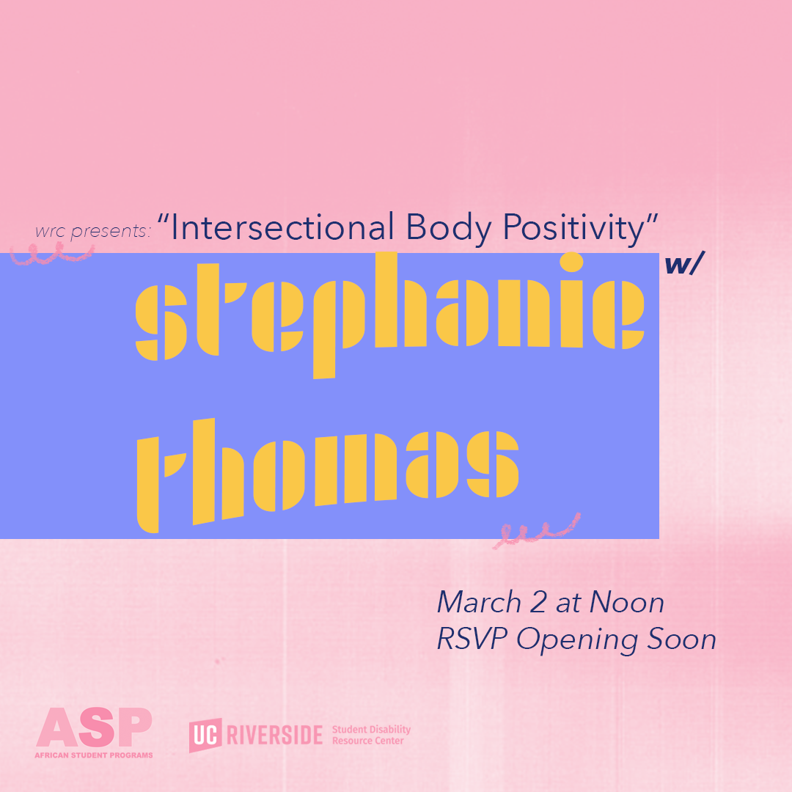
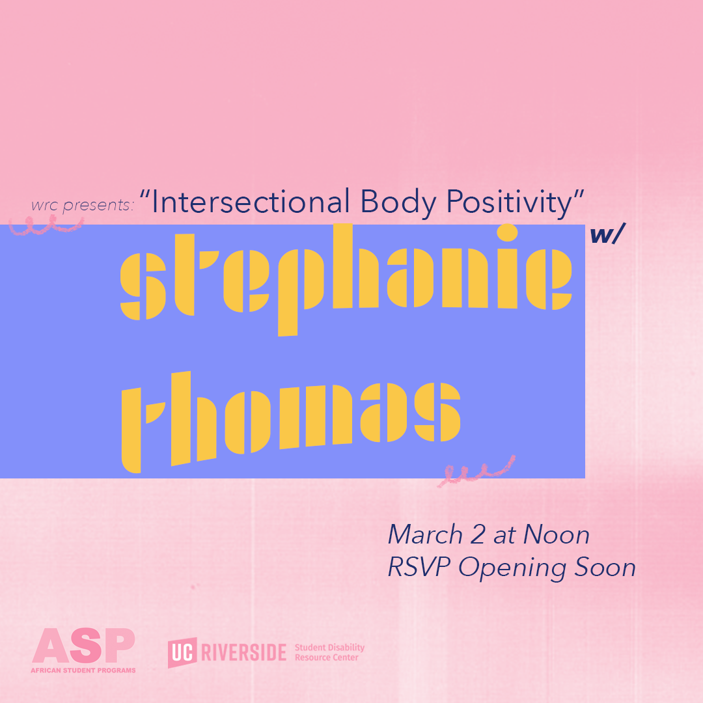

Portfolio
 




I am a fourth year undergrad at the University of California Riverside, majoring in Political Science International Affairs and Minoring in English. I currently work at UCR's Women's Resource Center as student staff, creating content for social media.
I plan on going to SJSU to obtain a Master of Library and Information Science
Graphic design is my passion.
• Helped first year students get familiar with UCR
• Created lesson plans
• Liased with WRC staff to disseminate information
• created content that centered around the WRC's mission and goals
• fluent in Photoshop, Adobe Illistrator, and Adobe Audition
• Helped staff with paperwork
• Maintained office space
• Communicated with constituents and the issues they faced
• Familiarized myself with government processes at the local, state, and federal level
